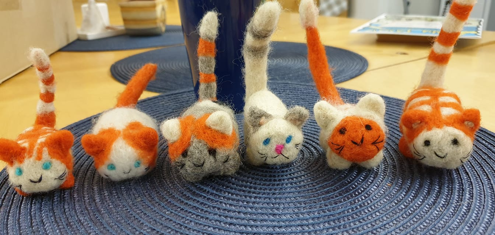

Viltimine on arvatavasti kõige vanem kanga valmistamise viis. Kuna vill on kergesti vormitav materjal, võimaldab viltimine sellest luua tasapinnalisi ja kolmemõõtmelisi esemeid, milles tegija "käekiri" on alati tajutav. Mõnus ja pehme vill on kaasahaarav materjal ning vilditud esemed alati omanäolised ja koduselt looduslähedased.
Wikipedia link 